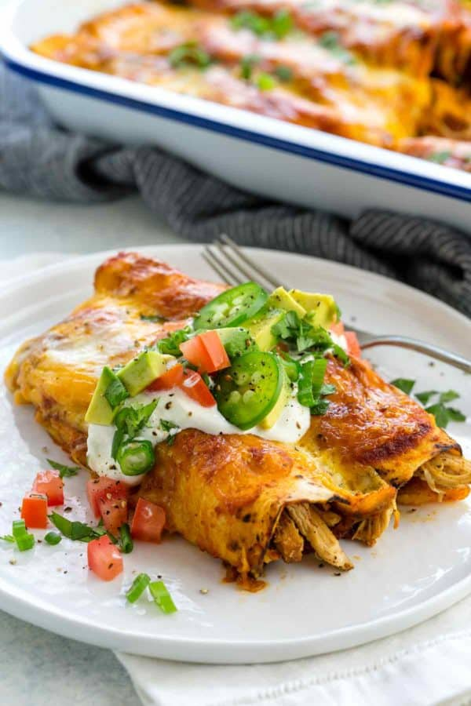

Chicken Enchiladas Recipe

Description
Here’s a quick and easy chicken enchiladas recipe that makes enough to feed a hungry family. The secret is the flavorful seasoning blend and preparation of the chicken before rolling them in the tortillas.
Ingrediants
- 3 tablespoons vegetable oil
- 1 1/2 pounds skinless boneless chicken breast
- Salt and pepper
- 2 teaspoons cumin powder
- 2 teaspoons garlic powder
- 1 teaspoon Mexican Spice Blend
- 1 red onion, chopped
- 2 cloves garlic, minced
- 1 cup frozen corn, thawed
- 5 canned whole green chiles, seeded and coarsely chopped
- 4 canned chipotle chiles, seeded and minced
- 1 (28-ounce) can stewed tomatoes
- 1/2 teaspoon all-purpose flour
- 16 corn tortillas
- 1 1/2 cups enchilada sauce, canned
- 1 cup shredded Cheddar and Jack cheeses
- Garnish: chopped cilantro leaves, chopped scallions, sour cream, chopped tomatoes
Steps
- Coat large saute pan with oil. Season chicken with salt and pepper. Brown chicken over medium heat, allow 7 minutes each side or until no longer pink. Sprinkle chicken with cumin, garlic powder and Mexican spices before turning. Remove chicken to a platter, allow to cool.
- Saute onion and garlic in chicken drippings until tender. Add corn and chiles. Stir well to combine. Add canned tomatoes, saute 1 minute.
- Pull chicken breasts apart by hand into shredded strips. Add shredded chicken to saute pan, combine with vegetables. Dust the mixture with flour to help set.
- Microwave tortillas on high for 30 seconds. This softens them and makes them more pliable. Coat the bottom of 2 (13 by 9-inch) pans with a ladle of enchilada sauce. Using a large shallow bowl, dip each tortilla in enchilada sauce to lightly coat. Spoon 1/4 cup chicken mixture in each tortilla. Fold over filling, place 8 enchiladas in each pan with seam side down. Top with remaining enchilada sauce and cheese.
- Bake for 15 minutes in a preheated 350 degree F oven until cheese melts. Garnish with cilantro, scallion, sour cream and chopped tomatoes before serving. Serve with Spanish rice and beans.